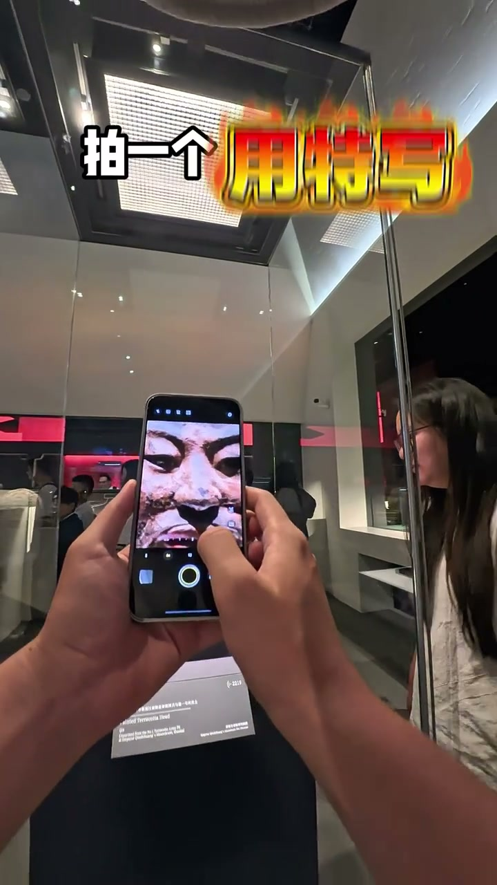
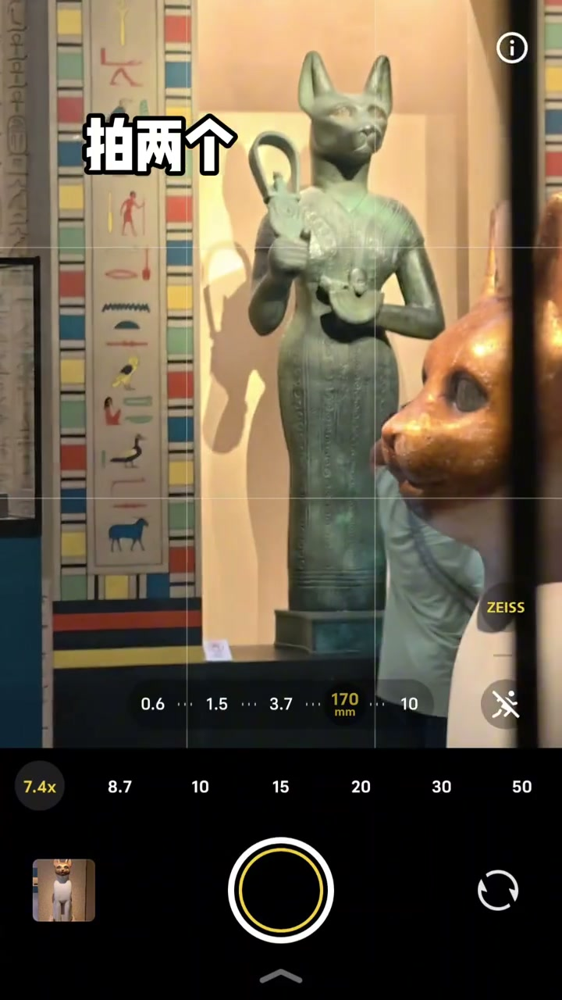
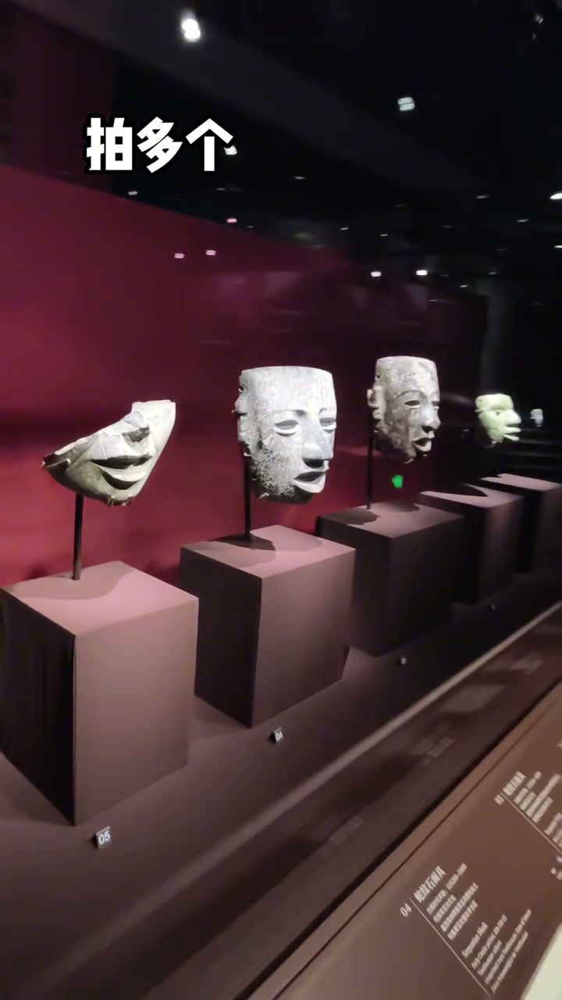
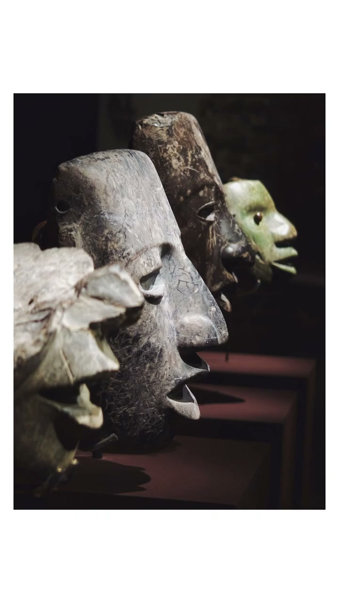
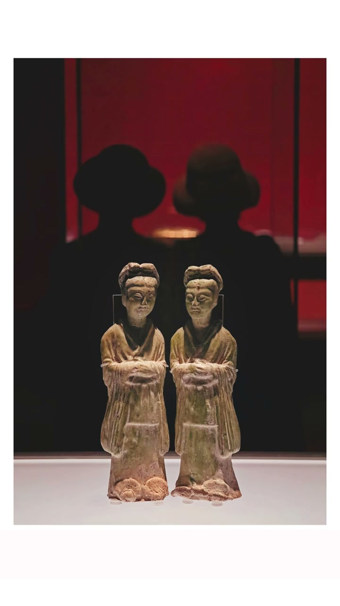
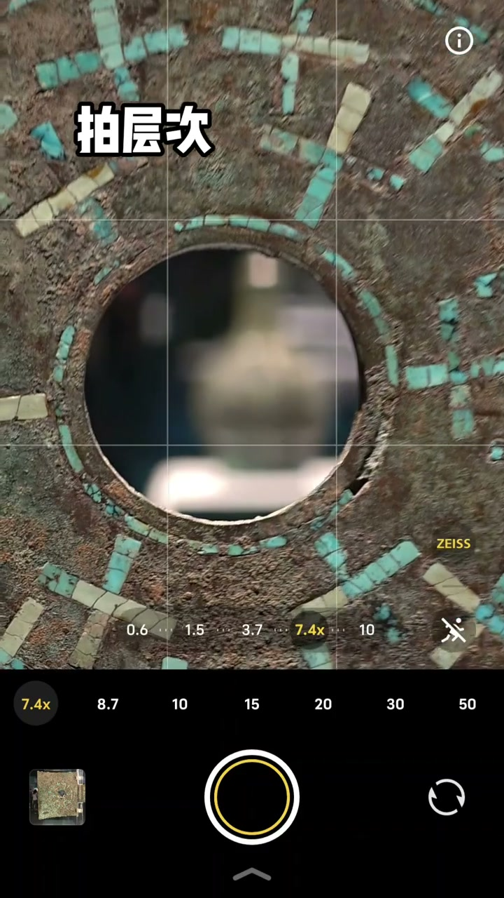

拍一个用特写，拍两个走对角线
00:00拍一个，用特写——单个文物放大纹样和细节，比全景更有质感。
00:01拍两个，对角线——两个展品构成对角线，画面有延伸感。

[00:01] 拍一个：特写放大细节
Shoot one: a close-up magnifying detail

[00:02] 拍两个：对角线构图
Shoot two: diagonal composition
拍多个绕侧面，故事感用剪影
00:03拍多个，绕侧面——斜角度拍出纵深，像在讲述展品的故事。
00:05故事感，用剪影——轮廓+逆光背景，情绪和氛围感拉满。

[00:04] 拍多个：绕侧面，斜角度纵深
Shoot several: circle to the side, oblique-angle depth

[00:05] 故事感：剪影+逆光
Story feel: silhouette + backlight
窗影找反射，层次用框架
00:06拍窗影，找反射——窗户光影投射和展柜玻璃反射，虚实结合有层次。
00:08拍层次，用框架——门框、窗框、展柜边做前景，把文物框在里面，构图有故事感。

[00:07] 窗影：找反射，虚实结合
Window shadows: seek reflections, blend sharp and soft

[00:09] 层次：用框架构图
Layering: use framing composition
博物馆拍照不是拍文物，是用构图讲故事——特写、对角线、侧面、剪影、反射、框架。